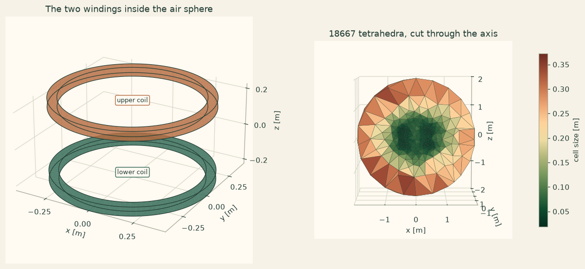

Docs › Examples › Magnetic field of a Helmholtz coil
Magnetostatics · 3D
Magnetic field of a Helmholtz coil
Two coaxial coils one radius apart: the famously uniform field at the centre, and how mesh, coil faceting and the air domain each limit the accuracy.
Run locally with OneSimulation. The example downloads are free. Running them requires an activated runtime. OneSimulation 1.0 · CPython 3.13 on macOS (Apple Silicon), Ubuntu 22.04 (x86-64), and Windows x64. Installation and activation · View pilot plans. Scope of the reference checks.

What it computes
The air sphere is read from a STEP file; both multiturn coils are declared as current sources and embedded in the mesh. OneSimulation solves the 3D magnetic vector potential with second-order Nedelec edge elements and a Coulomb gauge. The script that builds the STEP file comes with the notebook.
What it checks
The centre field agrees with the closed form for the coils to 0.10 % (5.5627 against 5.5570 nT), and the field along the axis up to 0.9 m to 0.83 % of the centre field.
Geometry
The notebook starts at the import of the CAD file helmholtz_coil_field.step: STEP (AP242), readable by any CAD program, with the names of the faces that the boundary conditions use. Put it next to the notebook.


The geometry script
The script helmholtz_coil_field_geometry.py builds the geometry with the CAD objects of OneSimulation and writes the file. Change a dimension there, run it, and run the notebook again.
"""Geometry of the OneSimulation example "Magnetic field of a Helmholtz coil".
Builds the air region around the coil pair, a sphere of 2 m radius about the centre of the pair,
with the CAD objects of OneSimulation and writes helmholtz_coil_field.step. Its one face keeps the
name surface in the file. The two windings are no part of the file: they are current sources of
the model and are placed inside the air by the mesher.
"""
from onesim.cad.d3 import Sphere
air = Sphere(radius=2.0)
air.save("helmholtz_coil_field.step")The notebook
The complete notebook, cell by cell. Run it to produce the figures and the comparison printout.
Two circular coils of radius \(R=0.4\) m with 10 turns each sit at \(z=\pm R/2\) and carry the same current of 0.25 mA. At this spacing the first three derivatives of the axial field vanish at the centre, so the field between the coils is very uniform.
The model solves \(\nabla\times(\mu_0^{-1}\nabla\times\mathbf A)=\mathbf J\) with second-order Nédélec edge elements and a Coulomb gauge. The windings have a square cross-section of 5 cm and a uniform current density. The air is a sphere of radius \(a=2\) m with magnetic insulation.
The air sphere comes from the CAD file helmholtz_coil_field.step; the script helmholtz_coil_field_geometry.py builds it with the CAD objects of OneSimulation. The windings are current sources of the model, which the mesher places inside the air.
Reference. On the axis the field of the two loops is
with the centre value \((4/5)^{3/2}\mu_0NI/R\). The last term is the image field of the insulated sphere, which sees the coil pair as a dipole; it lowers the field by 1.1 %.
import numpy as np
from onesim.cad.d2 import Plane
from onesim.cad.d3 import AnnularCylinder
from onesim.cad.exchange import load
from onesim.materials import VacuumPermeability
from onesim.meshing import LocalRefinement, TetrahedralMesher
from onesim.meshing.quality import quality
from onesim.numerics import Numerics
from onesim.numerics.fem import FiniteElement, Nedelec
from onesim.numerics.linear import SparseDirect
from onesim.physics.magnetostatics import (
CoulombGauge,
MagneticInsulation,
MagneticVectorPotential,
Magnetostatics,
SolenoidCurrent,
)
from onesim.simulation import Problem, Simulation
from onesim.visualization import plots, theme
theme.set()Geometry and mesh
load returns the air sphere. The two windings are embedded regions of the mesh, which is fine around them and in the region between the coils.
air = load("helmholtz_coil_field.step")
radius, width, turns, current, air_radius = 0.4, 0.05, 10, 0.25e-3, air.size[0] / 2
coils = tuple(
SolenoidCurrent(
inner_radius=radius - width / 2,
outer_radius=radius + width / 2,
length=width,
turns=turns,
current=current,
center=(0.0, 0.0, offset),
support_factory=AnnularCylinder,
)
for offset in (-radius / 2, radius / 2)
)
windings = tuple(coil.support for coil in coils)
mesh = TetrahedralMesher(
target_size=0.6,
embedded_regions=windings,
refinements=tuple(
LocalRefinement(region=winding, target_size=0.05) for winding in windings
),
size_field=lambda points: np.where(
np.linalg.norm(points, axis=1) < 0.55, 0.14, 0.6
),
).generate(air)
fig = plots.figure(1, 2, size=(14, 6))
plots.geometry(
[
winding.named(name)
for winding, name in zip(windings, ("lower coil", "upper coil"))
],
title="The two windings inside the air sphere",
ax=fig[0],
)
plots.mesh(
mesh,
cell_values=np.cbrt(quality(mesh)["size"]),
plane=((0, 0, 0), (0, -1, 0)),
label="cell size [m]",
camera=plots.Camera(elevation=5, azimuth=-90),
title=f"{mesh.cell_count} tetrahedra, cut through the axis",
ax=fig[1],
)
plots.show()Model
mu0 = float(VacuumPermeability().evaluate())
model = Magnetostatics(
domain=air.volume,
permeability=VacuumPermeability(),
formulation=MagneticVectorPotential(gauge=CoulombGauge()),
current_sources=coils,
)
problem = Problem(
name="Helmholtz coil",
geometry=air,
physics=(model,),
boundary_conditions=(
MagneticInsulation(boundary=air.boundaries.all, physics=model),
),
)
numerics = Numerics(
spatial=FiniteElement(element=Nedelec(order=2)), linear_solver=SparseDirect()
)
flux_density = (
Simulation(problem=problem, mesh=mesh, numerics=numerics)
.solve_stationary()
.field(model.magnetic_flux_density)
)Results
The field on the axis against the closed form, and the size of the region in which the field stays within 0.1 % of its centre value.
centre_field = 0.8**1.5 * mu0 * turns * current / radius
def axis_field(z):
"""Axial field of the two loops inside the insulated air sphere."""
loops = sum(
(radius**2 + (z - offset) ** 2) ** -1.5 for offset in (-radius / 2, radius / 2)
)
return mu0 * turns * current * radius**2 * (loops / 2 - 1 / air_radius**3)
z = np.linspace(0.0, 0.9, 46)
on_axis = flux_density.evaluate(
np.column_stack((np.zeros_like(z), np.zeros_like(z), z))
)[:, 2]
uniform = z[np.argmax(np.abs(on_axis / on_axis[0] - 1) > 1e-3)]
print(
f"field at the centre: simulation {1e9 * on_axis[0]:.4f} nT, closed form {1e9 * axis_field(0.0):.4f} nT "
f"({100 * (on_axis[0] / axis_field(0.0) - 1):+.2f} %); thin loops in free space {1e9 * centre_field:.4f} nT"
)
print(
f"largest deviation on the axis up to z = 0.9 m: {100 * np.abs(on_axis - axis_field(z)).max() / centre_field:.2f} % of the centre field"
)
print(
f"the axial field stays within 0.1 % of its centre value up to z = {uniform:.2f} m"
)Figure
The field strength in a plane through the axis, and the axial field against the closed form.
strength = lambda B, position: np.linalg.norm(B, axis=1) / centre_field
fine = np.linspace(0.0, 0.9, 200)
fig = plots.figure(1, 2, size=(14, 6))
plots.section(
flux_density,
plane=Plane(origin=(0, 0, 0), normal=(0, 1, 0)),
component=strength,
limits=(0, 2.2),
contours=11,
subdivisions=2,
label="|B| / centre field of the thin loops",
title="Field strength",
xlimits=(-0.9, 0.9),
ylimits=(-0.75, 0.75),
xlabel="x [m]",
ylabel="z [m]",
ax=fig[0],
)
plots.line(
points={"simulation": (z, on_axis / centre_field)},
reference={"closed form": (fine, axis_field(fine) / centre_field)},
vlines={"coil plane": radius / 2},
xlabel="z on the axis [m]",
ylabel="B_z / centre field of the thin loops",
title="Axial field",
ax=fig[1],
)
plots.show()Going further
Move the coils further apart or closer together and the plateau of the axial field turns into a dip or a peak. A third coil pair (Maxwell coil) widens the uniform region further, and opposite currents give the linear gradient field of an anti-Helmholtz pair.